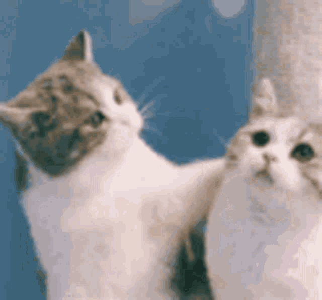

|  |
Kaha shuru karu?i just can't believe how long its been? THREE YEARS????? but i want our love to last for another THREE CENTURIES :P i love you i love you i love you i love you i only love you the way i love you. i really don't know where to even begin writing, i just feel there is alwasy something left to say no matter how much i keep reminding how much i love you, it is never enough for me. so this is a very small gesture from me trying to show how much important you are for me🥺 anyways back to the point where it all started, will never forget the day i met you💗 still get butterflies just by thinking about that day omg. well, i met you in a very bad phase of my life :( that is why i took few months to open up. but despite of that you never gave up, you always loved me, showed me efforts, took well care of me. i will always be so so grateful for those times🥺🥺🥹🥹🥹 i never believed i even deserve love. to be honest i never knew what power of love is until you loved me🧸🍀 you helped me become confident, you'd always push me to get out of my comfort zone😭😭😭😭😭 omg supportive king😚😚😚 this love actually made me so brave and made me do things i never did before. i started studying hard so we could go on better dates xD i miss how childish i was xD it's funny how i was really gareeb back in 2021 but in 2021 we had the best time of our lives, but now despite having money we barely meet😞 brave toh ho hi gayi hu tumhare waje se, anxiety abhi bhi hai par kaafi kam zarur ho gayi hai🥹🥹🥹 tumhare aane ke pehle kabhi pata hi nahi tha pyaar itna mazboot bana deta hai insaan ko🤌🏻🌹 it's like sirf tumhari kami thi, abh sab perfect sa lagta hai :') also made my dream of being in love true???? it was always my dream to have someone to love, to |